← 返回阅读库 · 原论文目录
论文讲解阅读文档 · 新模型 · v049
A Laplacian Pyramid Translation Network[2105.09188]
视频时长 00:16:11；讲解文字 5,916 字符；提取讲解画面 34 张。按视频原顺序阅读，每段文字保留时间戳。
文字来自整段视频的自动语音转写，按自然停顿分段，并与 PPT / 论文页面 / 演示画面对齐。未将讲解压缩为摘要；术语、数字和口述公式请结合画面及原论文核对。 阅读稿已校正规范部分明确术语误识别；原始逐字稿和每处修改记录另行保留。
讲解画面为源视频截图（640×360），不是可编辑 PPT 文件。全片按每秒 2 帧扫描内容变化，逐步展开页保留；连续动画保留代表画面。清晰度受源视频限制。
下载完整资料包 · 含离线 HTML、PDF、Word、全部 PPT 画面和字幕。
原论文与材料
High-Resolution Photorealistic Image Translation in Real-Time: A Laplacian Pyramid Translation Network · 下载完整 PDF（9 页）
按时间阅读
00:00:00–00:00:45 · 画面 001
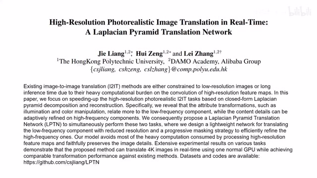
00:00:00–00:00:45 · 画面 001大家好今天我们来快速说一篇论文 High Resolution Photorealistic Image Translation in RealtimeThe Laplacian Pyramid Translation Network 这篇论文我们看标题 High Resolution 高清大图多图杀猫 Image Translation 同时做的是 realtime 跑得比谁都快那么自己怎么实现的我们是通过拉普拉斯金字塔这么一看就合理多了拉普拉斯金字塔通过多层次的结构能够提升我们的网络的运行效率而不是说一个层次直接去处理这样一个大的分辨率的图像那么接下来我们首先快速回顾一下拉普达斯金字塔然后再介绍这篇论文的具体的实现说到拉普达斯金字塔我们还是得提到高斯金字塔我们一张图像进来我们叫它 G0 对它做高斯模糊也就是用高斯核去卷积它然后将采样
00:00:45–00:00:50 · 画面 002
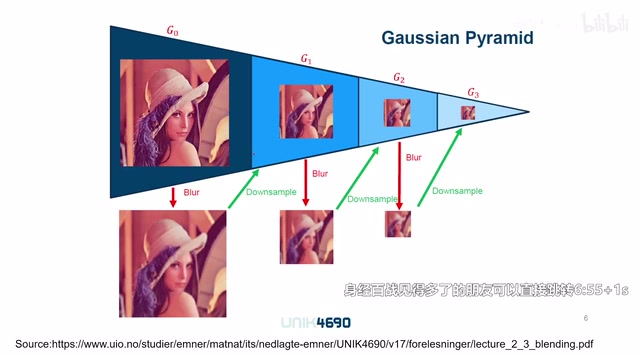
00:00:45–00:00:50 · 画面 00200:00:50–00:02:23 · 画面 003
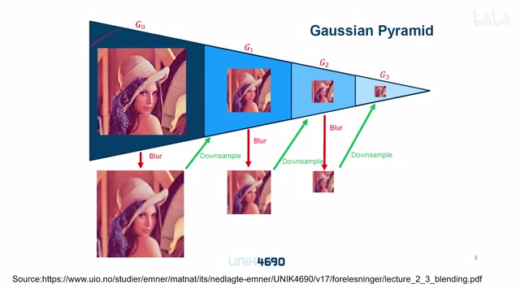
00:00:50–00:02:23 · 画面 003得到这个图像呢我们叫它 G1 这个呢就是第一层金字塔的图像那么同样的呢我们再下做重复再继续模糊继续降彩样得到 G2 G3 这样子呢一个四层的这个高斯金字塔就形成了一般来讲呢我们每次降彩样呢这个图像的宽度和这个高度呢都会缩减为原来的一半那这个时候呢有朋友可能就会问不就是提个金字塔吗对吧这玩意我也会把这个像素留上 1%剩下的都扔掉那不就得了吗你这为什么还是费着劲叫做这个模糊呢那么这个模糊呢其实它的作用呢是非常重大的那么这里呢我们可以通过信号的频率分析这个角度来理解它那一个提示啊就是我们的这个模糊
它本质上是等同于一个低通的滤波那么降彩样在这个过程中它更改了一个非常重要的变量这个时候读过书的朋友们已经知道答案了非常欢迎你把你的想法解释放在我们的评论区或者弹幕里面包括说如果我们去掉这个模糊直接降彩样会发生什么事情欢迎你留言讨论摩尔文什么的才不知道呢那么接下来我们来继续看有了这个高斯金字塔之后呢特别我们要记住这个高斯金字塔中每一层的这个符号的表示我们呢就可以来看我们的拉普拉斯金字塔那么拉普拉斯金字塔呢它的这个操作呢跟高斯金字塔呢要更上一步我们开始原始图像进来
00:02:23–00:03:34 · 画面 004
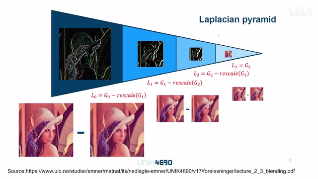
00:02:23–00:03:34 · 画面 004一样的也是做这个模糊做浆彩样那么与高斯金字塔不同的是呢我并非保留 G0 或者 G1 而是把 G1 呢重新缩放成跟 G0 一样的大小然后呢它俩做差做的这个差呢我们叫它 L0 也就是拉普达斯金字塔的第 0 层我们把这个差给保存下来那么同样的我们得到 G1 之后呢再根据之前的高普斯金字塔的操作得到 G2然后呢把 G2 再缩放放回来 G1-G2 的差那么得到 L1 这个呢是拉普拉斯金字塔的第一层那么以此类推推到最后我们不要继续再升层了我们最后得到这个 G3 呢就是拉普拉斯金字塔的第三层所以可以看到呢拉普拉斯金字塔呢它在前面的几层呢都是存的是差分的图像那么最后一层呢才是存的是我们跟高斯金字塔一样的这样一个图像那么这样一种保存的方式
它有什么优点呢或者说我们为什么要费这么大劲提这样一个拉普拉斯这个金字塔呢那么很显然的一个优势呢首先我们是可以通过这样一个拉普拉斯金字塔来无损的复原原始的图像为什么这么说呢你想我从这个 L3 这个地方也就是高斯金字塔的第三层这里
00:03:34–00:04:19 · 画面 005
00:03:34–00:04:19 · 画面 005我把这个高斯金字塔的第三层呢重新给它缩放成高斯金字塔第二层的这个大小然后呢加上我们的这个 L2 是不是就把 G2 还原出来了而且这个过程是无损的哦那么得到 G2 之后呢我们再重新继续把它放大再加上我们第一层的这个拉夫达斯金字塔的图像 G1 就还原出来了同理呢 G0 也就还原出来了这里你可以看到呢它们列出来一个表达式那你一看把上面这些式子整整变形带回来哎好像就是这个表达式而且确实呢它是没有损失的那当然你说无损的保存图像的方法还是很多呀但是你说这个拉普达斯金塔这飞这么大进抽这么多层它有什么优势呢那其实它一个很重要的优势呢就是它可以节约我们保存图像的这个空间那这个时候有朋友就说哎停停停对吧你这一个图像原来就这么大
00:04:19–00:04:20 · 画面 006
00:04:19–00:04:20 · 画面 00600:04:20–00:04:47 · 画面 007
00:04:20–00:04:47 · 画面 007你现在要保存一份跟原来图像一样大小的这个图像，同时呢还要保存金字塔这些后面这些图像。那明显呢，你要保存这个图像的面积呢比原来图像大多了。你还搁这说这个截边的存储的空间，这这是欺负我读书多吗？那么从面积上来看呢，当然是这样的。我们拉夫达斯金字塔呢，它的图像的面积是增大了。
00:04:47–00:04:48 · 画面 008
00:04:47–00:04:48 · 画面 00800:04:48–00:05:44 · 画面 009
00:04:48–00:05:44 · 画面 009但实际上呢，如果我们观察到每一层图像，特别是前面的差分图像，因为我们知道这个 G0 和这个生产样之后的 G1 呢，它们的差别呢应该不是很大。所以呢，我们差分出来这个图像它的绝对值呢应该比较小。那如果这个图像的这个绝对值比较小的话呢，我们就可以用更少的 bit 去描述每一个像素。那比如说我这个彩色图像，每一个像素是由三个无符号的这个 8bit 的这个整形来给它描述的。
现在我可能只要三个 bit 就够了。那么这样子呢，我们虽然用到了像素的数量增加了，但是每一个像素的 bit 数量呢减少了。总体来说呢，还是减少了这个图像的这个信息的。那么总体来说呢，还是减少了整个这个图像存储时所用的这个空间啊。这个我数读的少，怎么会骗你们呢？对吧？那么到这里呢，我们整个拉普达斯金字塔的一些重要的特性呢，基本呢都涉及到了。
00:05:44–00:05:45 · 画面 010
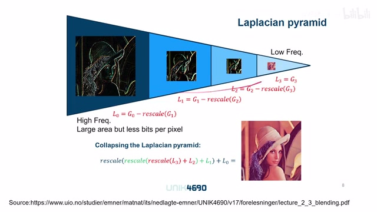
00:05:44–00:05:45 · 画面 01000:05:45–00:05:50 · 画面 011
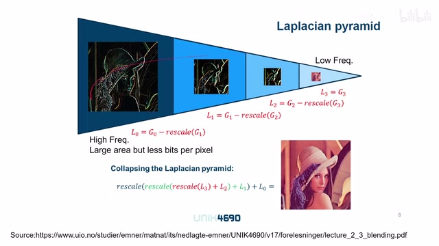
00:05:45–00:05:50 · 画面 01100:05:50–00:05:51 · 画面 012
00:05:50–00:05:51 · 画面 01200:05:51–00:05:58 · 画面 013
00:05:51–00:05:58 · 画面 01300:05:58–00:05:59 · 画面 014
00:05:58–00:05:59 · 画面 01400:05:59–00:06:58 · 画面 015
00:05:59–00:06:58 · 画面 015那这个时候呢有这个动手能力强的朋友呢已经打开 OpenCV 找到了他的这个拉普拉斯金字塔确确说是拉普拉斯金字塔那个 Brennan 的这个代码发现在他这个势力的校成里面呢我们这个这个重建出来的图像呢是模糊的那之前你不是还说这个拉普拉斯金字塔是无损的重建吗怎么做这个分解再重建之后这个图像就变模糊了呢那这个时候呢，我们就不得不提到我们在实现拉夫萨斯金字塔中非常重要的一个容易被忽视的细节，那就是我们用来保存差分图像的这个数据格式。因为你想差分吧，它有可能是正的，有可能是负的。所以呢，我们必须保证存储它的这个格式呢是一个能处理，是一个能表达正负的这样一个数值。这样子呢，你在分解和重构的时候呢不会遇到这个数字越界的这个问题。
才能实现无损的重建。好了，那么经过刚刚之前的一段铺垫呢，我们终于来到这篇论文。那这篇论文的核心思想呢，其实非常简单，就是说我在做这个 domain translation 的时候呢，我们跟 domain 相关的这些特性呢，其实呢主要就是这个照明和这个颜色这些问题。你比如说这里呢，我们有一张白天的这个图像和夜间的这个图像，你看到他们的直方图呢是很不一样的。
00:06:58–00:07:50 · 画面 016
00:06:58–00:07:50 · 画面 016那具体不一样在哪呢？你主要看脂肪图的形状。那么你看脂肪图的形状呢，就可以明显看出来它们的颜色的分布是不一样的。那么但是如果我们把这两张图像都做拉普塔斯金字塔给它拆分开来，我们发现如果对比这两张图像里面的高频信息呢，看它们的脂肪图就长得非常相近，但是低频信息呢，它们依然差别很大。所以这就说明我们的这些颜色和照明这些信息主要是通过这些低频的信号来给它变化过来的，而这些高频的信号在这个 Domain Translation 中基本没有什么变化。而且这些高频信号往往反映的是图像中的这些纹理这边缘的这些特征。
00:07:50–00:07:51 · 画面 017
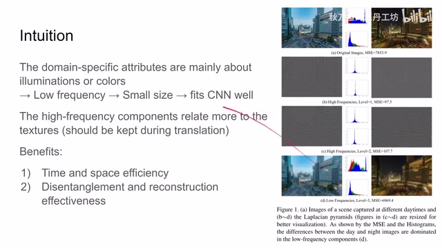
00:07:50–00:07:51 · 画面 01700:07:51–00:08:51 · 画面 018
00:07:51–00:08:51 · 画面 018是我们希望在这个 translation 的过程中得到保留的一些信号。这样子把高频级留下来，整个图像才显得这个犀利嘛。所以呢，这种特性呢就给我们提供了一个非常好的便利。反正我们的是这个低频的信号要做这个颜色的变换，我就扔到这个各个卷积层里面卷就完了。反正卷积呢也不会特别清晰，而且呢卷积对这个图像的尺寸非常敏感。正好我通过拉普达斯金字塔把我们最后一层图像的尺寸降了下来，这样也非常适合我们的 CNN 来发挥，这是一个非常有力的设计。综合以上特性，我们发现我们如果直接操作图像拉普达斯金字塔，那么就能够在时间和空间上得到效率的提升。好的，那么在这个 intuition 之下，我们就来看作者是怎么样实现的过程，这里是作者提供的整体的一个 pipeline。
00:08:51–00:08:52 · 画面 019
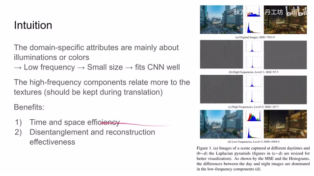
00:08:51–00:08:52 · 画面 01900:08:52–00:08:55 · 画面 020
00:08:52–00:08:55 · 画面 02000:08:55–00:08:59 · 画面 021
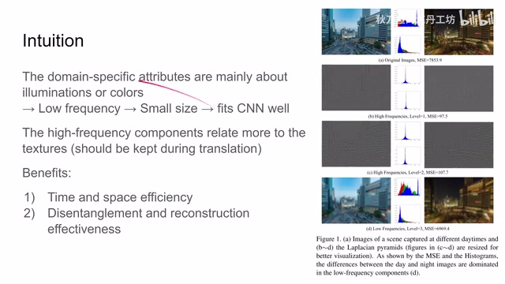
00:08:55–00:08:59 · 画面 02100:08:59–00:09:41 · 画面 022
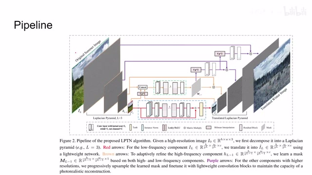
00:08:59–00:09:41 · 画面 022看到呢，这个网络结构呢，我们先不看的话，首先左边是原始的图像左拉普达斯金字塔，前面几层呢都是差分的图像。那么最后一层呢，是最后的最高的这层的高斯金字塔的最后一层。那么低频呢有低频的处理，高频呢有高频的处理。最后呢，我们生成了一个 target domain 的这个拉普达斯金字塔。然后呢，我们只需要把这个 team 的拉普达斯金字塔给它重建回来。
那么整个这个 image 的 translation 呢就已经完成了是一个非常巧妙的设计那么下面呢我们就继续来看它在这个低频和高频中是怎么样操作的首先看低频的部分啊低频的部分其实网络结构设计非常简单原始的这个最高层的这个高斯的这个金字塔的图像进来先做了这个 1 乘 1 的 convolution 啊这样然后中间连着这个 Leaky ReLU 这个激活函数嘛然后呢连了我这个 5 个这个 residual block
00:09:41–00:10:25 · 画面 023
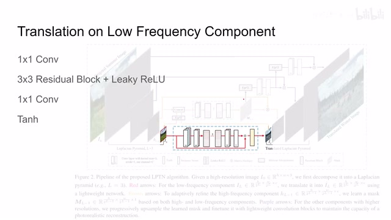
00:09:41–00:10:25 · 画面 023那么连完之后呢我们再做这个 1 乘 1 的 Composition 最后呢把它变成了三通道的图像因为进来也是三通道这里呢我们看到有一个大的残渣的连接同时呢过了一个 Tag 这个激化函数最终呢我们就可以得到低频的这个图像的变化非常直白的一个设计这样子呢就把我们拉普拉斯金字塔最顶层的这个图像给它找出来了那么然后呢我们再来看这个高频的部分高频的部分呢整的活儿呢就比较花哨了
00:10:25–00:12:22 · 画面 024
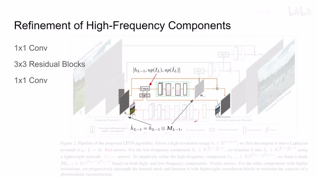
00:10:25–00:12:22 · 画面 024我们首先看，那么在做完低频的 translation 之后呢，我们拿到了这个低频 translation 之后的图像。那么与此同时呢，我们之前还包括低频的这个原始的图像，还有这层拉普拉斯金字塔的原始的图像。那我现在呢，把这两个最高层的这个图像给它生产样。然后呢，再加上我们的这个原始的这个拉帕斯这个图像，把这三个图像呢，现在他们尺寸因为是过了生产量之后他们的尺寸变成一致了，把他们这三个图像呢给它串接起来。那么把那么把我们这个图像串接起来之后呢，我们呢就可以送到一个相对轻一点的这个卷积网络里面。这里呢你看到作者的设计，先是 1 乘 1 的 Composition，它的 Channel 变成 16，然后呢连了这个三个残差模块。
最后呢，再过了一个 1 乘 1 的这个 convolution，把它这个深度呢变成了 1。因为这里呢作者并不直接输出我们的这个高频的这个图像，而是输出一个跟这个高频图像尺寸一样的这样一个 mask，它里面呢记录了每一个像素的权重。还有了这个 mask 之后呢，我们要做一个操作，就是把原来的这个高频的图像跟我们这个 mask 来进行相乘。那相乘之后呢，得到了就是我们 translation 之后新的这个高频的图像。
这是一个非常巧妙的设计，因为你想，卷积网络一个非常致命的缺陷，它随着卷积的进行，图像是变得越来越模糊的。原来一个高频的信号进来，卷完之后估计已经模糊的不成样子。所以作者这里采用了一个间接调整高频的方法，就是通过这个模板。通过它改变这个高频的这个图像中每个像素的比例，从而实现了对这个高频图像保留细节的这样一个修改。于是呢，我们就成功的拿到了这一层的这个拉夫拉斯图像。随着我们层出的继续呢，接下来的操作就变得更简单了。我们得到我们得到这个模板之后，把它进行生产样，生产样之后呢，过一个非常轻的，你可以看到这个 1 乘 1 的这个 convolution，得到一个新的模板。
00:12:22–00:13:20 · 画面 025
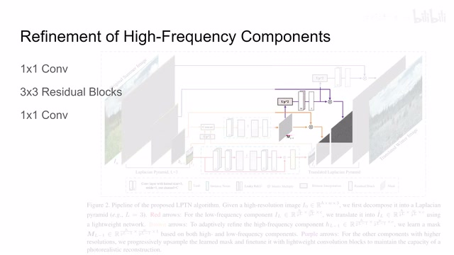
00:12:22–00:13:20 · 画面 025新的模板呢再和这个层次的这个拉夫拉斯的这个图像相成，成出来的结果呢就是我们这一层的拉夫拉斯的这个图像。那这一层的这个模板呢，同时你也别闲着，你继续生产样，生产样之后过一个浅浅的网络，然后呢再跟这一层的这个拉夫拉斯的这个图像来做一个相成，就可以得到更大尺度的更底层的这个拉夫拉斯的图像。虽然我不太喜欢这么称呼，但你可以把它理解为这是一种注意力的机制，通过注意力来调控我们高频的图像，而避免直接的去对高频的图像进行生成和预测。好的，那么以上就是本文的最主要的技术细节了。那么接下来我们就只要关心一下它作者使用的 Loss 就可以了。这里作者使用的 Loss 就是 Reconstruction Loss，用的是 MSE。
00:13:20–00:13:36 · 画面 026
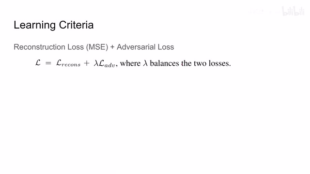
00:13:20–00:13:36 · 画面 026都是我们有这个 target domain 的图像的，也就是说我明确知道我的图像要翻译成什么样子，我知道我有我的 ground truth，那这就非常好办了，对吧？同时呢，我们还有一个 discriminator 做了一个对抗的这样一个 loss。那这里稍微提一下它的实现的细节，就是它的这个 discriminator 呢是在三个不同的尺度来对这个图像的这个质量进行评估的。那最后呢，两个 loss 组合起来就是我们最终的 loss，所以你去训练就完事了。
00:13:36–00:13:38 · 画面 027
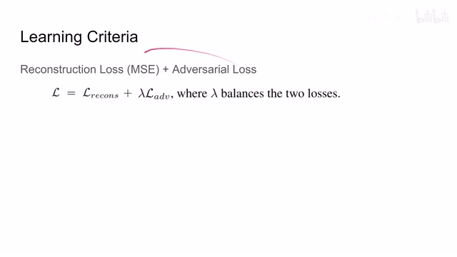
00:13:36–00:13:38 · 画面 02700:13:38–00:13:56 · 画面 028
00:13:38–00:13:56 · 画面 028那么下面呢我们就可以看到作者回报的结果，首先做了一个 retouching 的这个 applicationretouching 呢就相当于我把这个图像美化一下，演得更好看一点，调整到这个样子送到我们的网络里面。如果丢失了这个高频的信号或者是缺少了这个 instance normalization，你可以看到呢，它的效果呢是非常不好的。而按照本门的方法把这些所有的东西都加上了呢，取得了不错的结果。
00:13:56–00:14:27 · 画面 029
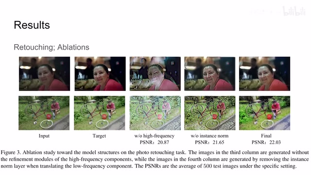
00:13:56–00:14:27 · 画面 029而且 PSNR 也是相当的高对比一下这个 ground truth 非常相近是一个非常不错的一个效果那么接下来用更多的实例对比其他的方法那可以看到本文方法呢跟之前方法的一个对比那么当然呢我们还是有数据的支持因为有这个 ground truth 嘛我们就可以计算 PSNR SSIM 对比之前的方法那么本文的方法呢当然是在各个尺度上都比原来这些方法要好
00:14:27–00:14:28 · 画面 030
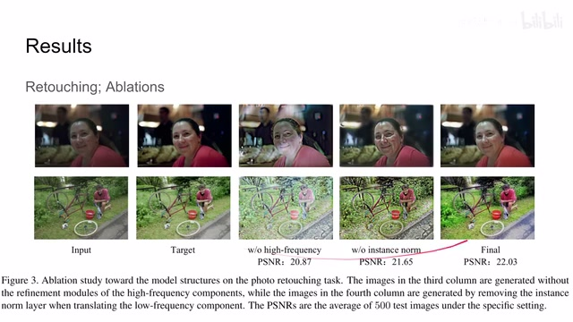
00:14:27–00:14:28 · 画面 03000:14:28–00:14:31 · 画面 031
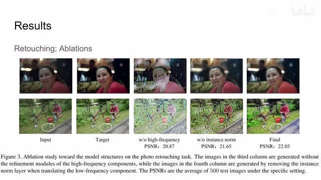
00:14:28–00:14:31 · 画面 03100:14:31–00:14:38 · 画面 032
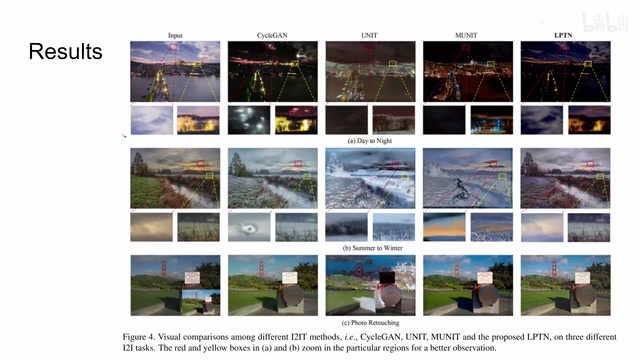
00:14:31–00:14:38 · 画面 03200:14:38–00:16:11 · 画面 033
00:14:38–00:16:11 · 画面 033而且你像一旦到这个原始的这个尺度，从 3000 多倒甚至到 6000 多宽的图像啊，这些方法呢基本都没法运行了。那么右边这里呢是做着汇报的这个处理的速度，你可以看到呢，本文的方法跑得比谁都快。那这个时候有朋友可能注意到了还会说，婷婷这个你随着拉夫拉斯经济塔的层数的增加，你这个怎么越跑越快啊，这不符合直觉，你说层数增加它的计算量不是增大了吗？啊理论上这样讲是没有错的。
但实际你想，随着这个拉普达斯金字塔层数的增加，我们最顶层的这个高斯金字塔它这个图像的面积呢就变小了，因为它会通过一个非常巨大的网络来做这个 Domain Translation。所以如果能够减少它的面积的话，对我们处理的速度的提升呢是非常巨大的。那这个呢是这个数据在第一眼看上去违反直觉的地方。那此外呢作者还请了一般人类做了一些盲测。
就是把本文方法输出的图像跟前面这些方法输出的图像放在一起，让人类来挑选说哪一个看起来 OK，看起来最好。那么当然本文方法做了两次演讲，一百多个教授一致通过了。不对不对这个走错了，总之本文方法取得了不错的结果。好的，那么以上就是我对这篇论文的一个简单的分析，感谢您的收看，再见。
00:16:11–00:16:11 · 画面 034
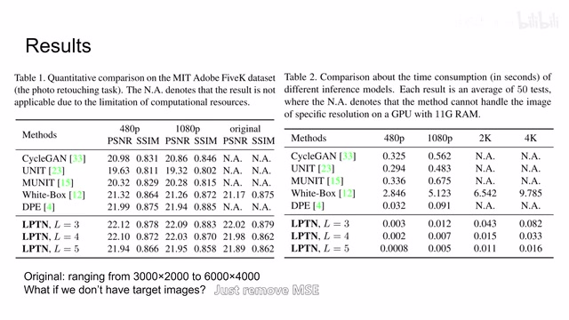
00:16:11–00:16:11 · 画面 034转写与来源说明 · 0 个自动复核提示
保留 37 个原始语音片段，0 个片段触发自动复核提示。提示仅用于定位可能的术语、重复或识别问题，不等于已确认错误。
讲解画面为源视频截图（640×360），不是可编辑 PPT 文件。全片按每秒 2 帧扫描内容变化，逐步展开页保留；连续动画保留代表画面。清晰度受源视频限制。
原视频：paper/合集_2026-10-16_新模型/[论文简析]A Laplacian Pyramid Translation Network[2105.09188].mp4
SHA-256：87d63be7bf8ee3a81924ed8f6c947ce03b00d7eb62b3acfd16fa86595b5c7cb0
全文按视频语音与画面制作。原论文可从上方链接下载；完整资料包保留全文、原始逐字稿、字幕和校对记录。